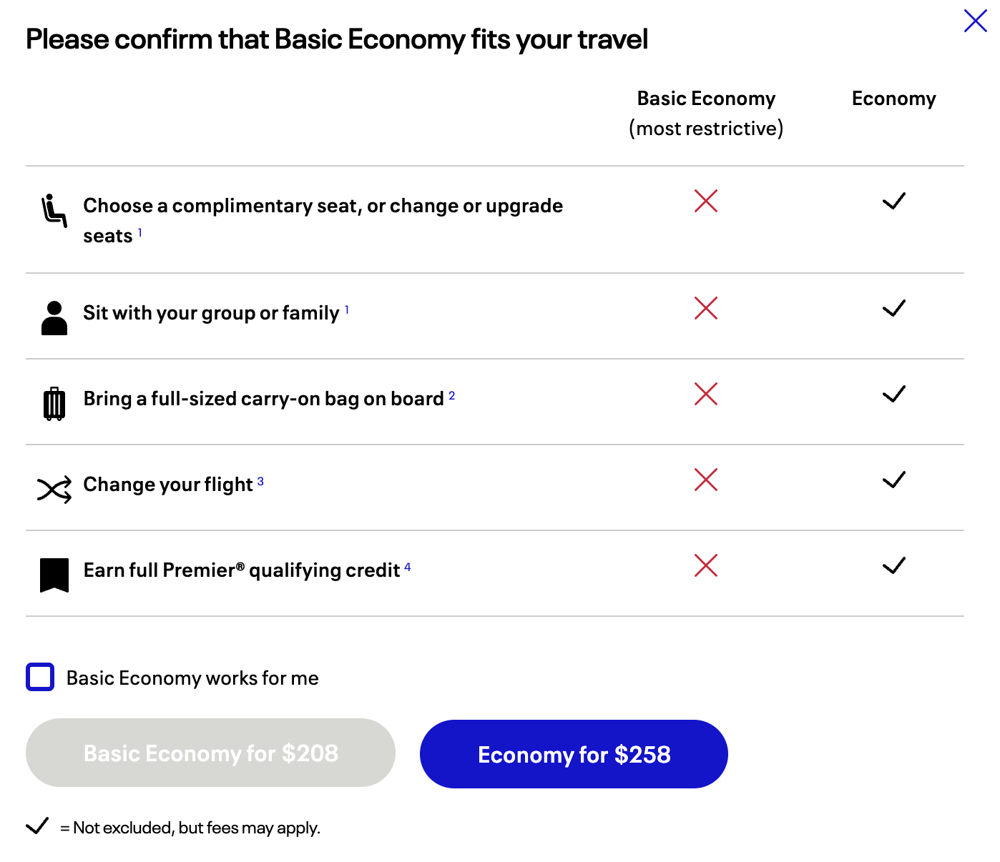
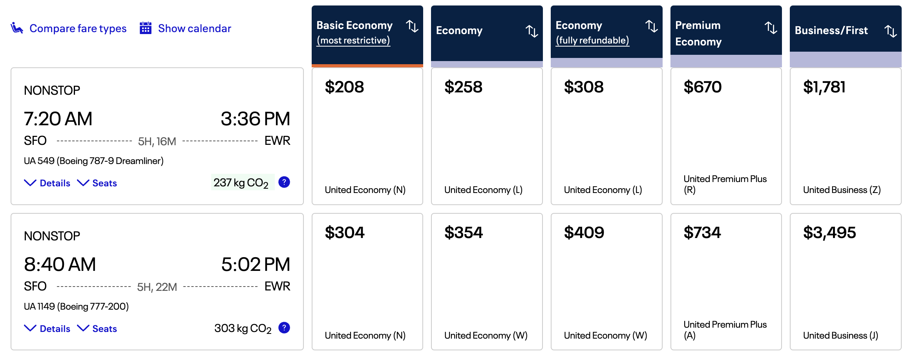

EV Example: Basic Economy
Basic Econ vs. Regular Econ
Suppose that you are considering booking a flight and as a value-conscious consumer are considering Basic Economy vs. Regular Economy.
There are quite a few restrictions with a basic economy ticket as shown in the image below:

The tickets generally cost $50 less than a regular economy ticket on the same flight:

If you needed a full-sized carry-on (which actually is included if you have certain statuses or a United credit card) or to sit with your family, then there isn’t much to even evaluate, and the regular economy option will usually be best.
But let’s look at this specific scenario:
- Solo traveler
- Indifferent to seat (you can still pay for a seat or hope to get lucky)
- Has status to bring full-sized carry-on
So the main consideration is the flight change. A basic economy ticket cannot be changed. It can only be canceled for a $49.50 cancellation fee. The rest of the refund will come back as a United flight credit. (Even with a regular economy ticket, a cancellation will be refunded as flight credit, and we assume going forward that this is as good as a cash refund.)
EV Basic vs. Regular on United
Suppose that a basic economy ticket is available for \$x and a regular economy ticket is available for \$x+50.
Suppose that before the flight, we either decide to change to another flight that costs \$n or stick with the original flight.
Case 1: Stick with Original Flight
Total costs if just getting original flight
\mathbb{E}[\text{Basic Economy}] = \$x
\mathbb{E}[\text{Regular Economy}] = \$x + 50
Case 2: Change Flight
Total costs in the case of changing the flight
\mathbb{E}[\text{Basic Economy}] = \$n + 49.50
\mathbb{E}[\text{Regular Economy}] = \$n
EVs
Assume the probability of changing the flight is c
\mathbb{E}[\text{Basic Economy}] = (x)(1-c) + (n+49.50)c
\mathbb{E}[\text{Regular Economy}] = (x+50)(1-c) + (n)c
What c makes these equal?
\begin{equation} \begin{split} (1-c)(x) + c(n+49.50) &= (1-c)(x+50) + c(n) \\ x - x*c + c*n + 49.50*c &= x + 50 - c*x -50*c + c*n \\ 49.50*c &= 50 - 50*c \\ 99.50*c &= 50 \\ c &= 0.503 \end{split} \end{equation}
Therefore when c is lower than 0.503, you are better off taking Basic Economy, and otherwise better off taking Regular Economy. In other words, if your chance of needing to switch is less than 1/2, then you are better off in Basic.
American Airlines
American Airlines has a \$99 fee instead of the \$49.50 fee from United!
Let’s see how this changes things.
\begin{equation} \begin{split} (1-c)(x) + c(n+99) &= (1-c)(x+50) + c(n) \\ x - x*c + c*n + 99*c &= x + 50 - c*x -50*c + c*n \\ 99*c &= 50 - 50*c \\ 149*c &= 50 \\ c &= 0.336 \end{split} \end{equation}
Now you only get better value with the Basic Economy ticket when you switch less than 0.336, or about 1/3 of the time.
Numerical Example
Suppose that you the original price of the flight was \$200 in Basic Economy and \$250 in Regular Economy.
If you want to change your flight, what happens in each of these scenarios? We’ll see that Basic Economy always ends up costing the Regular Economy price plus an additional \$49.50 for the cancellation fee.
Changed Flight Price Down
If the price goes down to \$100, Basic Economy will cost \$100 + 49.50 for the flight change, for a total of \$149.50.
Regular Economy will just cost the \$100 new price.
Changed Flight Same Price
If the price stays at \$150, Basic Economy will cost \$150 + 49.50 for the flight change, for a total of \$199.50.
Regular Economy will just cost the \$150 price.
Changed Flight Price Up
If the price goes up to \$300, Basic Economy will cost \$300 + 49.50 for the flight change, for a total of \$349.50.
Regular Economy will just cost the \$300 price.
Let’s analyze this case a bit more. If at the original purchase time we estimate a 25\% chance of needing to switch, what would be our EV?
\begin{equation} \begin{split} \mathbb{E}(\text{Basic Economy}) &= \text{Price}_{(\text{Basic})}*p(\text{Stay}) + \text{Price}_{(\text{After\_Switch})}*p(\text{Switch}) \\ &= 200*0.75 + 349.50*0.25 \\ &= \$237.38 \end{split} \end{equation}
\begin{equation} \begin{split} \mathbb{E}(\text{Regular Economy}) &= \text{Price}_{(\text{Regular})}*p(\text{Stay}) + \text{Price}_{(\text{After\_Switch})}*p(\text{Switch}) \\ &= 250*0.75 + 300*0.25 \\ &= \$262.50 \end{split} \end{equation}
As we expected, with the probability of switching less than the 0.503 value that we derived earlier, we expect the Basic Economy option to be better value and indeed it would have saved 262.50 - 237.38 = \$25.12 in this case!